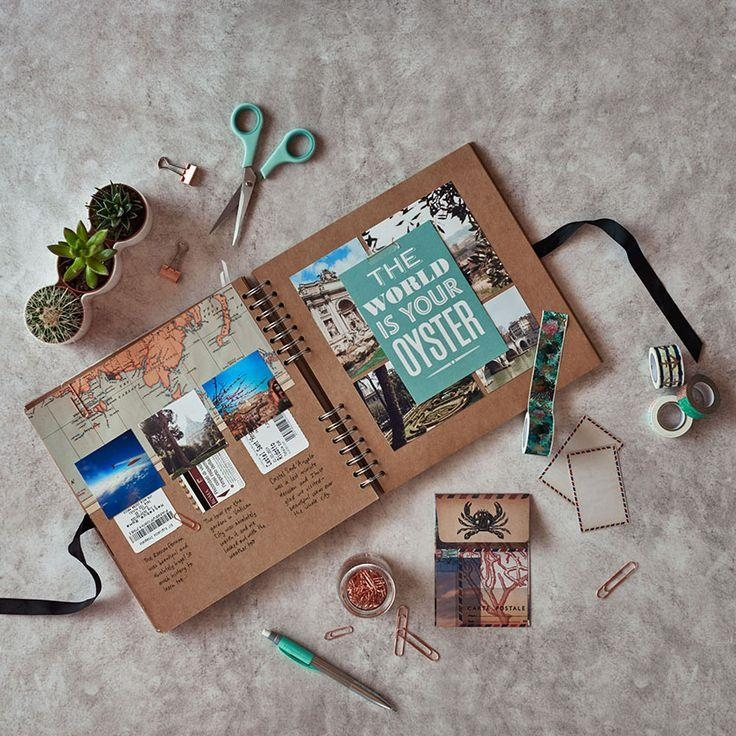

Kas yra skrebinimas ir kokia jo vertė
Skrebinimas - įdomi veikla. Vienus ji įtraukia, kitiems atrodo beprasmiška. Mėgstantis popieriaus spalvų, faktūrų ir ramaus kūrimo teikiamą džiaugsmą, tikėtina, išbandęs skrebinimą nebegalės sustoti, nes pats procesas įtraukia taip, jog galima paskęsti jame ilgoms valandoms. Skrebinimo tikslas - įamžinti akimirkas, kad jos liktų prisiminimu, o ne išnyktų negrįžtamai mūsų praeityje.
Išgirdę apie skrebinimą nieko apie jį nežinantys žmonės tik klausiamai pakelia antakius, o papasakojus detaliau, kilsteli ir pečius. Tai atrodo tokia paprasta ir jokios apčiuopiamos naudos neduodanti veikla. Bet tereikia išsitraukti trumpam parodyti albumą ir tada skrebinimas įgauna prasmę. Mes turime socialinius tinklus, kuriuos kartas nuo karto, atiduodami savo privatumą, pildome kasdieniais įspūdžiais. Tai taip pat dalis mūsų istorijos. Visgi, vargu, ar kada nors, po penkių ar dešimties metų, atsikėlę nuo Kalėdų stalo, išsitrauksime mobiliuosius, kad kartu prisimintume praėjusius metus. Bet esu tikra, kad vartysime albumus – po penkių, po dešimties ir juo labiau po dvidešimties metų, kai vaikai paliks namus ir tuščias lizdas atrodys toks didelis. Žinau, kad vartys ir mano vaikai. Kodėl? Todėl, kad jie tai daro jau dabar...
Skrebinimas - hobis ne tik suaugusiems. Jis ypatingai naudingas ir vaikams, nes:
- Lavina emocinį intelektą
- Skatina kurti
- Ugdo kantrybę
- Lavina smulkiąją motoriką